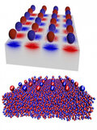
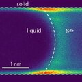
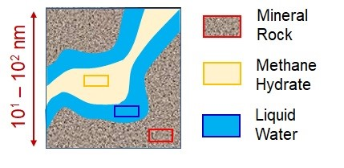

Publications
Click on the title to access the link (if available)
2026
P219. L. Didier, A. Sam, C. Herrero, R. Venegas, B. Coasne, Self-diffusion and Permeability of Methane, Carbon Dioxide, and their Mixture in Zeolite: Cage Effect, Fluid Redistribution, and Nanosegregation , Microp. Mesop. Mater , in press (2026)
P218. N. Ben Amor, D. Bauer, B. Braconnier, B. Coasne, Adsorption Thermody-namics and Kinetics of Simple and Complex Fluids: Physical Modeling of surface saturation, reservoir depletion, lateral interactions, and collective effects , Langmuir , in press (2026)
2025
P217. A. Dombret, A. Sutter, B. Coquinot, B. Coasne, L. Bocquet, Enhanced hy-drodynamic permeability through fluctuating porous membranes , Phys. Rev. Fluids , in press (2025)
P216. S. Gravelle, B. Coasne, Adsorption selectivity of water-ethanol mixtures on organosilica surfaces: Role of hydrophilicity , Open Res. Europe 5 , 158 (2025)
P215. D. Jin, B. Coasne, Phase stability of mixed carbon dioxide/methane hydrates confined in nanoporous carbon , Langmuir 41 , 25695 (2025)
P214. S. Gravelle, B. Coasne, C. Holm, A. Schlaich, Intermittent molecular motion and first passage statistics for the NMR relaxation of confined water , Phys. Rev. E 112 , 035502 (2025)
P213. L. Didier, A. Sam, R. Venegas, B. Coasne, Acoustic Response of Molecular Adsorption and Sound Propagation in Nanoporous Materials , Phys. Rev. Mat. 9 , 056001 (2025)
P212. R. Manokaran, T. Aumond, J. Eck, O. Ergincan, C. Daniel, D. Farrusseng, B. Coasne, Molecular simulation of fluid adsorption in nanoporous adsorbents: Simple descriptors for space decontamination applications , Adsorption 31 , 78 (2025)
P211. S. Babaei, B. Coasne, M. Ostadhassan, Adsorption-Induced Deformation in Microporous Kerogen by Hydrogen and Me-thane: Implications for Underground Hydrogen Storage , Langmuir 41 , 6364 (2025)
P210. L. N. Ho, A. Lesage, A. Rossini, D. Farrusseng, B. Coasne, Dynamics Slow-down Induced by Gas Oversolubility in Nanoconfined Fluids , ACS Nano 19 , 12971 (2025).
P209. A. Schlaich, J. L. Barrat, B. Coasne, Theory and Modeling of Transport for Simple Fluids in Nanoporous Materials: From Microscopic to Coarse-Grained Descriptions , Chem. Rev. 125 , 2561 (2025)
P208. N. Modesto, C. Pinchart, M. A. Sater, P. Judeinstein, R. Ramos, D. Lairez, B. Coasne, P. H. Jouneau, M. Appel, P. Fouquet, A. Tengattini, M. Russina, V. Grzimek, G. Gunther, D. Gigmes, T. Phan, Q. Berrod, J. M. Zanotti, Ionic Liquids Based Electrolytes Under 1D CNT Confinement: A Tenfold Gain in Conductivity , Energy Storage Materials, 75 , 104045 (2025)
P207. A. Shomali, C. Zhang, B. Coasne, E. J. Schofield, D. Derome, J. Carmeliet, Cellulose consolidated with Polyethylene Glycol: The Nanoscale Mechanisms Revealed by Hybrid Monte Carlo/Molecular Dynamics Modeling , Int. J. Biol. Macromol. 285 , 137661 (2025)
P206. W. Kellouai, P. Judeinstein, M. Plazanet, J. M. Zanotti, Q. Berrod, M. Drobek, A. Julbe, B. Coasne, Free Volume Theory of Self-diffusion in Zeolite: Molecular simulation and Experiment , Microp. Mesop. Mater. 381 , 113305 (2025). (Invited Paper from IZA selection committee)
2024
P205. S. Ghojavand, E. B. Clatworthy, B. Coasne, D. H. Piva, R. Guillet-Nicolas, V. Pugnet, P. Kumar-Gandhi, S. Mintova, Dynamic CO2 separation performance of nano-sized CHA zeolites under multi-component gas mixtures , Chem. Eng. Sci. 500 , 157101 (2024).
P204. R. Manokaran, D. Farrusseng, B. Coasne, Molecular Simulation of Cyclohexane in Nanoporous Materials: Adsorption of Conformers and Coadsorption with Water and Carbon Dioxide , Langmuir 40 , 22027 (2024).
P203. T. Aumond, R. Manokaran, J. Eck, O. Ergincan, C. Daniel, D. Farrusseng, B. Coasne, A Review on Adsorption in Nanoporous Adsorbents for Gas Decontamination: Space Applications and Beyond , Ind. Eng. Chem. Res. 63 , 19375 (2024) (Invited Paper).
P202. A. Schlaich, M. Vandamme, M. Plazanet, B. Coasne, Bridging Microscopic Dynamics and Hydraulic Permeability in Mechanically-Deformed Nanoporous Materials , ACS Nano 18 , 26011 (2024).
P201. W. Liu, A. Shomali, C. Zhang, B. Coasne, J. Carmeliet, D. Derome, Nanostructure and Interfacial Mechanical Properties of PEG/Cellulose Nanocompo-sites Studied with Molecular Dynamics , Carbohydrate Polymers 343 , 122429 (2024).
P200. A. Streb, R. Lively, P. Llewellyn, A. Matsumoto, M. Mazzotti, R. Pini, B. Coasne, Towards carbon neutral scientific societies: A case study with the International Adsorption Society , Adsorption 30 , 1291 (2024).
P199. M. Santoro, J. Rouquette, M. Fabbiani, F. Di Renzo, B. Coasne, W. Dong, L. Glazyrin, J. Haines, Strong Volume Increase and Symmetrization in Siliceous Zeolites due to Hydrogen Insertion at High Pressure , Angew. Chem. Int. Ed. 63 , e202406425 (2024).
P198. L. Hua, A. Shomali, C. Zhang, B. Coasne, D. Derome, J. Carmeliet, Anisotropic deformation in a polymer slab subjected to fluid adsorption , Langmuir 40 , 4382 (2024).
P197. S. Dutta, A. Nossov, A. Galarneau, Y. Didi, B. Said, R. Denoyel, V. Wernert, B. Coasne, F. Guenneau, Apparent Anomalous Temperature Dependence of Self-diffusion Studied by Pulsed-Field Gradient Nuclear Magnetic Resonance and Thermodynamic Modeling , J. Phys. Chem. Lett. 15 , 3276 (2024).
P196. N. Ferreira de Souza, L. Fernando Mercier Franco, C. Picard, B. Coasne, Thermal Conductivity of a Fluid-Filled Nanoporous Material: Underlying Molecular Mechanisms and the Rattle Effect , J. Phys. Chem. B 128 , 2516 (2024).
P195. I. C. Medeiros-Costa, L. Catita, D. Wisser, A. Lesage, V. Lefebvre, A. S. Gay, V. Rouchon, C. Laroche, J. Perez-Pellitero, B. Coasne, Connectivity Assessment in Hierarchical Zeolites by Correlating Nuclear Magnetic Resonance, Electron Tomography and Adsorption Scanning , Mater. Chem. Phys. 315 , 128969 (2024).
P194. W. Kellouai, J. L. Barrat, P. Judeinstein, M. Plazanet, B. Coasne, On De Gennes Narrowing of Fluids Confined at the Molecular Scale in Nanoporous Materials , J. Chem. Phys. 160 , 024113 (2024).
P193. D. Jin, N. Wu, J. Zhong, B. Coasne, Phase stability and nucleation kinetics of salts in confinement , J. Mol. Liq. 394 , 123698 (2024).
P192. C. Hadj, B. Dollet, B. Coasne, E. Lorenceau, Soap Film Membranes for CO2/Air Separation , Langmuir 40 , 1327 (2024).
2001 - 2023
P191. V. P. Kurupath, B. Coasne, Mixture Adsorption in Hierarchical Nanoporous Zeolites: In-pore and Surface Selectivity , J. Phys. Chem. B 127 , 9596 (2023).
P190. L. Hua, C. Zhang, A. Shomali, B. Coasne, D. Derome, J. Carmeliet, Sorption-deformation interplay in hierarchical porous polymeric structure composed of slit-pore in amorphous matrix , Langmuir 39 , 11345 (2023).
P189. M. Rescigno, M. Lucioli, F. G. Alabarse, U. Ranieri, B. Frick, B. Coasne, L. E. Bove, Low Temperature Dynamics of Water Confined in Hydrophilic Zeolite Nanopores , J. Phys. Chem. B 127 , 20 (2023).
P188. A. Sam, M. Barbagero, R. Venegas, B. Coasne, Multiscale Acoustic Properties of Nanoporous Materials: From Microscopic Dynamics to Mechanics and Wave Propagation , J. Phys. Chem. C 127 , 15 (2023).
P187. C. Zhang, B. Coasne, D. Derome, J. Carmeliet, Adsorption/percolation model for water diffusion in deformable nanoporous polymers , ACS Nano 17 , 4507 (2023).
P186. A. J. Souna, S. R. Cohen,, C. A. Rivera, K. Manfred, B. Coasne, J. T. Fourkas, The Role of Resonant Coupling in Vibrational Sum-Frequency-Generation Spectros-copy: Liquid Acetonitrile at the Silica Interface , J. Mol. Liq. 375 , 121315 (2023).
P185. S. Dutta, A. Galarneau, D. Minoux, C. Aquino, J. P. Dath, F. Guenneau, B. Coasne, Molecular Diffusion in Hierarchical Zeolites with Ordered Mesoporosity: Pulsed Field Gradient Nuclear Magnetic Resonance combined with Thermodynamic Modeling , J. Phys. Chem. C 127 , 1548 (2023).
P184. A. Obliger, C. Bousige, J. M. Leyssale, B. Coasne, Mini-review on the devel-opment of atomistic kerogen models and their applications in gas adsorption and dif-fusion (Invited Review Paper) , Energy Fuels 37 , 1678 (2023).
+ ACS Editor’s Choice, https://pubs.acs.org/page/policy/editorchoice/index.html
P183. V. Wernert, B. Coasne, P. Levitz, K. Nguyen, E. J. Garcia, R. Denoyel, Tortuosity of hierarchical porous materials: diffusion experiments and random walk simulations , Chem. Eng. Sci. 264 , 118136 (2022).
P182. D. Bauer, Z. Zaafouri, G. Batot, B. Coasne, From Transient to Stationary Transport in Porous Networks under Various Adsorption Conditions and Kinetics , J. Phys. Chem. B 126 , 6125 (2022).
P181. C. O’Sullivan, C. Arson, B. Coasne, A Perspective on Darcy’s Law across the Scales: From Physical Foundations to Particulate Mechanics , J. Eng. Mech. 148 , 11 (2022).
+ Editor’s Choice section of the Journal of Engineering Mechanics page in the ASCE Library https://ascelibrary.org/journal/jenmdt
P180. I. C. Medeiros-Costa, C. Laroche, B. Coasne, J. Pérez-Pellitero, Xylene Selectivity at the External Surface of Hierarchical Zeolites: Experiment and Molecular Modeling , Ind. Eng. Chem. Res. 61 , 10184 (2022).
P179. C. Pagis, D. Laprune, Lucian Roiban, T. Epicier, C. Daniel, D. Farrusseng, B. Coasne, Morphology and Topology Assessment in Hierarchical Zeolite Materials: Adsorption Hysteresis, Scanning Behavior, and Domain Theory , Inorg. Chem. Frontiers 9 , 2903 (2022).
P178. W. Kellouai, P. Judenstein, M. Plazanet, S. Baudoin, M. Drobek, A. Julbe, B. Coasne, Gas Adsorption in Zeolite and Thin Zeolite Layers: Molecular Simulation, Experiment and Adsorption Potential Theory , Langmuir 38 , 5428 (2022).
P177. S. Ghojavand, Benoit Coasne, R. Guillet-Nicolas, P. Bazin, M. Desmurs, L. J. Aguilera, V. Ruaux, S. Mintova, The role of alkali metal cations on the CO2 adsorption behavior of nanosized chabazite , ACS Appl. Nano. Mater. 5, 5578 (2022).
P176. J. W. M. Osterrieth et al., How reproducible are surface areas calculated from the BET equation? , Adv. Materials , in press (2022).
P175. D. T. Bowron, D. A. Keen, M. Kint, C. Weigel, L. Konczewicz, S. Contreras, B. Coasne, G. Garbarino, M. Beaudhuin, J. Haines, J. Rouquette, Atomic-Spring Effect in Amorphous Silica-Helium Composite , J. Phys. Chem. C 176, 5722 (2022).
P174. Z. Zaafouri, G. Batot, C. Nieto-Draghi, B. Rotenberg, B. Coasne, D. Bauer, Impact of adsorption kinetics on pollutant dispersion in water flowing in nanopores , Adv. Water Res. 162, 104143 (2022).
P173. V. Wernert, K. L. Nguyen, P. Levitz, B. Coasne, R. Denoyel, Impact of surface diffusion on transport through porous materials , J. Chrom. A 1665, 462823 (2022).
P172. M. Dopke, F. Westerbaan van der Meij, B. Coasne, R. Hartkamp, Surface Protolysis and its Kinetics Impact the Electrical Double Layer , Phys. Rev. Lett. 128, 056001 (2022).
P171. S. R. Cohen, M. Plazanet, S. Rols, D. J. Voneshen, J. T. Fourkas, B. Coasne, Structure and Dynamics of Acetonitrile: Molecular Simulation and Neutron Scattering , J. Mol. Liq. 348, 118423 (2022).
P170. C. Zhang, M. Chen, B. Coasne, S. Keten, D. Derome, J. Carmeliet, Hygromechanics of Composite with Intramolecular Interactions at Fiber-Matrix Interface Investigated with Molecular Dynamics, Composites Part B 228, 109449 (2022).
P169. A. Schlaich, D. Jin, L. Bocquet, B. Coasne, Electronic screening using a virtual Thomas–Fermi fluid for predicting wetting and phase transitions of ionic liquids at metal surfaces, Nature Materials 21, 237 (2022).
+ CNRS communication: https://www.inp.cnrs.fr/index.php/fr/cnrsinfo/un-fluide-virtuel-pour-simuler-des-liquides-charges-confines
P168. M. Lions, C. Daniel, B. Coasne, F. Meunier, A. Tuel, D. Farrusseng, The Pivotal Role of Critical Hydroxyl Concentration in Si-rich zeolites for Switching Vapor Adsorption, J. Phys. Chem. C 125, 22890 (2021).
P167. J. Wolanin, L. Michel, D. Tabacchioni, J. M. Zanotti, J. Peters, I. Imaz, B. Coasne, M. Plazanet, C. Picard, Heterogeneous Microscopic Dynamics of Water Nanoconfined in a Ultra-hydrophobic Environment: Neutron Scattering and Molecular Modeling, J. Phys. Chem. B 125, 136 (2021).
P166. M. Santoro, M. Morana, D. Scelta, J. Rouquette, K. Dziubek, F. A. Gorelli, R. Bini, G. Garbarino, A. van der Lee, F. Di Renzo, B. Coasne, J. Haines, Insertion of Oxygen and Nitrogen in the Siliceous Zeolite TON at High-Pressure, J. Phys. Chem. C 125, 19517 (2021).
P165. C. Zhang, M. Chen, S. Keten, B. Coasne, D. Derome, J. Carmeliet, Hygromechanical mechanisms of wood cell wall revealed by molecular modeling and mixture rule analysis: Role of components, interphases and hydrogen bonding, Sci. Adv. 7, eabi8919 (2021).
P164. T. Rego, S. Spagnoli, M. C. Fauré, C. Allain, B. Coasne, J. Malinge, C. Shen, P. Fontaine, M. Goldmann, Unexpected order-disorder transition in Diacetylene alcohol Langmuir film, Langmuir 37, 30 (2021).
P163. Z. Zaafouri, G. Batot, C. Nieto-Draghi, B. Rotenberg, D. Bauer, B. Coasne, Lattice Boltzmann method for adsorption under stationary and transient conditions: Interplay between transport and adsorption kinetics in porous media, Phys. Rev. E 104, 015314 (2021).
P162. R. Bey, B. Coasne, C. Picard, Carbon dioxide as a line active agent: its impact on line tension and nucleation rate, Proc. Nat. Acad. Sci. 118, e2102449118 (2021).
+ CNRS communication: https://inp.cnrs.fr/fr/cnrsinfo/le-co2-comme-tensioactif-de-ligne-dans-un-nanopore
P161. F. G. Alabarse, B. Baptiste, M. Jimenez-Ruiz, B. Coasne, J. Haines, J. B. Brubach, P. Roy, H. E. Fischer, S. Klotz, L. E. Bove, Different Water Networks Confined in Unidirectional Hydrophilic Nanopores and Transitions with Temperature, J. Phys. Chem. C 125, 14378 (2021).
P160. D. Jin, B. Coasne, Reduced phase stability and faster formation/dissociation kinetics in confined methane hydrate, Proc. Nat. Acad. Sci. 118, e2024025118 (2021).
P159. W. Xu, X. Liu, M. Pena-Alvarez, H. C. Jiang, P. Dalladay-Simpson, B. Coasne, J. Haines, E. Gregoryanz, M. Santoro, High Pressure Insertion of Dense H2 into a Model Zeolite, J. Phys. Chem. C 125, 7511 (2021).
P158. L. Scalfi, B. Coasne, B. Rotenberg, On the Gibbs-Thomson equation for the crystallization of confined fluids, J. Chem. Phys. 154, 114711 (2021).
P157. P. Judeinstein, M. Zeghal, D. Constantin, C. Iojoiu, B. Coasne, Interplay of Structure and Dynamics in Lithium/Ionic Liquid Electrolytes: Experiment and Molecular Simulation, J. Phys. Chem. B 125, 1618 (2021).
P156. C. Bousige, P. E. Levitz, B. Coasne, Bridging scales in disordered porous media by mapping molecular dynamics onto intermittent Brownian motion, Nature Comm. 12, 1043 (2021).
P155. M. Chen, B. Coasne, R. Guyer, D. Derome, J. Carmeliet, A Poromechanical Model for Sorption Hysteresis in Nanoporous Polymers, J. Phys. Chem. B 124, 8690-8703 (2020).
-
P154. Y. Long, J.C. Palmer, B. Coasne, K. Shi, M. Sliwinska-Bartkowiak and K. E. Gubbins, Reply to Comment on “Pressure enhancement in carbon nanopores: a major confinement effect”, Phys. Chem. Chem. Phys. 22, 9826 (2020).
-
P153. M. Chen, B. Coasne, D. Derome, J. Carmeliet, Role of cellulose nanocrystals on hysteretic sorption and deformation of nanocomposites, Cellulose 27, 6945 (2020).
-
P152. Z. Zaafouri, D. Bauer, G. Batot, C. Nieto-Draghi, B. Coasne, Cooperative Effects Dominating the Thermodynamics and Kinetics of Surfactant Adsorption in Porous Media: From Lateral Interactions to Surface Aggregation, J. Phys. Chem. B 124, 10841-10849 (2020).
-
P151. M. Chen, B. Coasne, D. Derome, J. Carmeliet, Coupling of Sorption and Deformation in Soft Nanoporous Polymers: Molecular Simulation and Poromechanics, J. Mech. Phys. Sol. 137, 103830 (2020).
-
P150. C. Hadji, B. Dollet, H. Bodiguel, W. Drenckan, B. Coasne, E. Lorenceau, Impact of fluorocarbon gaseous environments on the permeability of soap films to air, Langmuir 36, 13236-13243 (2020).
-
P149. R. Bey, B. Coasne, C. Picard, Probing the concept of line tension down to the molecular scale, J. Chem. Phys. 152, 094707 (2020).
-
P148. C. Zhang, A. Shomali, R. Guyer, S. Keten, B. Coasne, D. Derome, J. Carmeliet, Disentangling Heat and Moisture Effects on Biopolymer Mechanics, Macromolecules 53, 1527 (2020).
-
P147. C. Zhang, B. Coasne, R. Guyer, D. Derome, J. Carmeliet, Moisture induced crossover in the thermodynamic and mechanical response of hydrophilic biopolymer, Cellulose 27, 89 (2020).
-
P146. A. Monpezat, S. Topin, L. Deliere, D. Farrusseng, B. Coasne, Evaluation methods of adsorbents for air purification and gas separation at low concentration. Case studies on xenon and krypton, Ind. Chem. Eng. Res. 58, 4560 (2019).
-
P145. A. Schlaich, B. Coasne, Dispersion truncation affects the phase behavior of bulk and confined fluids: coexistence, adsorption and criticality, J. Chem. Phys. 150, 154104 (2019).
-
P144. N. Ben Abdelouahab, A. Gossard, S. Rodts, B. Coasne, P. Coussot, Drying: a simple suction process, Eur. Phys. J. E 42, 66 (2019).
-
P143. M. Chen, B. Coasne, R. Guyer, D. Derome, J. Carmeliet, Molecular simulation of sorption-induced deformation in atomistic nanoporous materials, Langmuir 35, 7751 (2019).
-
P142. I. C. Medeiros-Costa, C. Laroche, J. Perez-Pellitero, B. Coasne, Characterization of hierarchical zeolites: Combining adsorption/intrusion, electron microscopy, diffraction and spectroscopic techniques (invited paper; special issue J. Patarin), Microp. Mesop. Mater. 287, 167 (2019).
-
P141. B. Coasne, D. Farrusseng, Gas oversolubility in nanoconfined liquids: Review and perspectives (invited review paper), Microp. Mesop. Mater. 288, 109561 (2019).
-
P140. M. Santoro, V. Veremeienko, M. Polisi, R. Fantini, F. Alabarse, R. Arletti, S. Quatieri, V. Svitlyk, A. van der Lee, J. Rouquette, B. Alonso, F. Di Renzo, B. Coasne, J. Haines, Insertion and Confinement of H2O in the hydrophobic siliceous zeolites TON and MFI at high pressure, J. Phys. Chem. C 123, 17432 (2019).
-
P139. M. Chen, C. Zhang, A. Shomali, B. Coasne, J. Carmeliet, D. Derome, Wood-moisture relationships studied with molecular dynamics - methodological guidelines, Forests 10, 628 (2019).
-
P138. G. Gor, B. Coasne, Editorial overview: Separations engineering – Advances in adsorption, Curr. Op. Chem. Eng. 24, A4-A6 (2019).
-
P137. A. Monpezat, G. Couchaux, V. Thomas, A. Artheix, L. Deliere, C. Greau, B. Coasne, D. Farrusseng, S. Topin, Effect of chlorine-containing VOCs on silver migration and sintering in ZSM-5 used in a TSA process, Catalysis 9, 686 (2019).
-
P136. I. Deroche, C. Picard, T. J. Daou, B. Coasne, Reminiscent Capillarity in Subnanopores, Nature Comm. 10, 4642 (2019). + CNRS communication: https://inc.cnrs.fr/index.php/fr/cnrsinfo/materiaux-poreux-capillarite-persistante-lechelle-moleculaire
+ Nature Comm. Editor’s highlight: https://www.nature.com/articles/s41467-019-12418-9
-
P135. M. Brun-Cosme-Bruny, E. Bertin, B. Coasne, P. Peyla, S. Rafai, Effective diffusivity of microswimmers in a crowded environment, J. Chem. Phys. 150, 104901 (2019).
-
P134. M. Bah, E. D. Manga, H. Blasco, P. Da Costa, M. Drobek, B. Coasne, A. Ayral, G. Despaux, E. Le Clezio, A. Julbe, Characterization of porous ceramic membranes by acoustic emission monitoring during gas permeation, J. Membrane Sci. 555, 88 (2018).
-
P133. J. M. Thibaud, J. Rouquette, K. Dziube, F. A. Gorelli, M. Santoro, G. Garbarino, S. Clément, O. Cambon, A. van der Lee, F. Di Renzo, B. Coasne, J. Haines, Saturation of the siliceous zeolite TON with neon at high-pressure, J. Phys. Chem. C 122, 8455 (2018).
-
P132. Z. Chaker, A. Bouzid, B. Coasne, C. Massobrio, M. Boero, G. Ori, The structure and dipolar properties of CO2 adsorbed in a porous glassy chalcogel: insights from first-principles molecular dynamics, J. Non Cryst. Sol. 498, 288 (2018).
-
P131. M. Chen, B. Coasne, J. Carmeliet, D. Derome, Role of hydrogen bonding in hysteresis observed in sorption-induced swelling of soft nanoporous polymers, Nature Comm. 9, 3507 (2018). + Nature Comm. Editor’s highlight: https://www.nature.com/articles/s41467-018-05897-9 + CNRS communication release.
-
P130. D. Mehlhorn, J. Rodriguez, T. Cacciaguerra, A. Radu-Dorin, F. Guenneau, A. Gedeon, B. Coasne, M. Thommes, D. Minoux, C. Aquino, J.-P. Dath, F. Fajula, A. Galarneau, Revelation on the complex nature of mesoporous FAU-Y zeolites, Langmuir 34, 11414 (2018).
-
P129. L. Bruschi, G. Mistura, F. Negri, B. Coasne, Y. Mayamei, W. Lee, Adsorption on alumina conical nanopores, Nanoscale 10, 18300 (2018).
-
P128. A. Galarneau, D. Mehlhorn, F. Guenneau, B. Coasne, F. Villemot, D. Minoux, C. Aquino, J.-P. Dath, Specific surface area determination of microporous/mesoporous materials: the case of mesoporous FAU-Y zeolites, Langmuir 34, 14134 (2018).
-
P127. I. Maruyama, J. Rymes, M. Vandamme, B. Coasne, Cavitation in hardened cement paste under short-term desorption measurements, Materials and Structures 51, 159 (2018).
-
P126. V. Kaiser, J. Comtet, A. Nigues, A. Siria, B. Coasne, L. Bocquet, Electrostatic interactions between ions near Thomas-Fermi substrates and the surface energy of ionic crystal at imperfect metals, Faraday Discussions 199, 129-158 (2017).
-
P125. J. Comtet, A. Nigues, V. Kaiser, B. Coasne, L. Bocquet, A. Siria, Nanoscale capillary freezing of ionic liquids confined between metallic interfaces and the role of electronic screening, Nature Materials 16, 634 (2017).
-
P124. A. Vioux, B. Coasne, From Ionogels to Biredox Ionic Liquids: Some Emerging Opportunities for Electrochemical Energy Storage and Conversion Devices, Adv. Energy Mater., 1700883 (2017).
-
P123. G. Hantal, L. Brochard, R. J. M. Pellenq, F. –J. Ulm, B. Coasne, Role of Interfaces in Elasticity and Failure of Clay-Organic Nanocomposites: Toughening upon Interface Weakening?, Langmuir 33, 11457 (2017).
-
P122. D. Jin, B. Coasne, Molecular Simulation of the Phase Diagram of Methane Hydrate: Free Energy Calculations, Direct Coexistence Method, and Hyper Parallel Tempering, Langmuir 33, 11217 (2017).
-
P121. J. S. Bender, J. T. Fourkas, B. Coasne, On the Empirical Analysis of Optical Kerr Effect Spectra: A Case for Constraint, J. Phys. Chem. C 121, 11376 (2017).
-
P120. A. Galarneau, F. Guenneau, A. Gedeon, D. Mereib, J. Rodriguez, F. Fajula, B. Coasne, Probing Interconnectivity in Hierarchical Microporous/Mesoporous Materials using Adsorption and Nuclear Magnetic Resonance Diffusion, J. Phys. Chem. C 120, 1562 (2016).
-
P119. A. Galarneau, A. Sasche, B. Said, C. H. Pelisson, P. Boscaro, N. Brun, L. Courtheoux, N. Olivi-Tran, B. Coasne, F. Fajula, Hierarchical Porous Silica Monoliths: a Novel Class of Microreactors for Process intensification in Catalysis and Adsorption, Comptes Rendus Chimie 19, 231 (2016).
-
P118. C. Bousige, C. Ghimbeu, C. Vix, A. E. Pomerantz, A. Suleimenova, G. Vaughan, G. Garbarino, M. Feygenson, C. Wildgruber, F. J. Ulm, R. J. M. Pellenq, B. Coasne, Realistic molecular model of kerogen’s nanostructure, Nature Materials 15, 576-582 (2016). + CNRS Communication Release: http://www.cnrs.fr/inp/spip.php?article4297
-
P117. S. Hocine, R. Hartkamp, B. Siboulet, M. Duvail, B. Coasne, P. Turq, J. F. Dufreche, How ion condensation occurs at a charged surface: a molecular dynamics investigation of the Stern layer for water-silica interfaces, J. Phys. Chem. C 120, 963 (2016).
-
P116. B. Coasne, Multiscale adsorption and transport in hierarchical porous materials (perspective paper), New J. Chem. 40, 4078-4094 (2016).
-
P115. L. Deliere, B. Coasne, S. Topin, C. Greau, C. Moulin, D. Farrusseng, Breakthrough in Xenon Capture and Purification Using Adsorbent-Supported Silver Nanoparticles, Chem. A Eur. J. 22, 9660-9666 (2016).
-
P114. L. Deliere, F. Villemot, D. Farrusseng, A. Galarneau, S. Topin, B. Coasne, Adsorption in heterogeneous microporous materials, Microp. Mesop. Mater. 229, 145-154 (2016).
-
P113. T. Lee, L. Bocquet, B. Coasne, Activated desorption at heterogeneous interfaces and long-time kinetics of hydrocarbon recovery from nanoporous media, Nature Comm. 7, 11890 (2016).
-
P112. G. Ori, C. Massobrio, A. Pradel, M. Ribes, B. Coasne, Nanoporous chalcogenides for adsorption and gas separation, Phys. Chem. Chem. Phys. 18, 13449-13458 (2016).
-
P111. J. Bender, S. Cohen, X. He, J. Fourkas, B. Coasne, Toward In Situ Measurement of the Density of Liquid Benzene using Optical Kerr Effect Spectroscopy, J. Phys. Chem. B 120, 9103 (2016).
-
P110. A. Obliger, R. J. M. Pellenq, F. J. Ulm, B. Coasne, Free Volume Theory of Hydrocarbon Mixture Transport in Nanoporous Materials, J. Phys. Chem. Lett. 7, 3712 (2016).
-
P109. J. S. Bender, B. Coasne, J. T. Fourkas, Assessing Polarizability Models for the Simulation of Low-Frequency Raman Spectra of Benzene, J. Phys. Chem. B 119, 9345 (2015).
-
P108. F. G. Alabarse, J. Rouquette, B. Coasne, A. Haidoux, C. Paulmann, O. Cambon, J. Haines, Mechanism of H2O Insertion and Chemical Bond Formation in AlPO4-54.xH2O at high pressure, J. Am. Chem. Soc. 137, 584 (2015).
-
P107. B. Coasne, Effect of surface texture on freezing of argon in nanopores: Surface-induced versus homogeneous crystallization, Langmuir 37, 2706 (2015).
-
P106. M. Lepinay, L. Broussous, K. Courouble, C. Licitra, F. Bertin, V. Rouessac, A. Ayral, B. Coasne, Predicting Adsorption on Bare and Modified Silica Surfaces, J. Phys. Chem. C 119, 6009 (2015).
-
P105. A. Botan, B. Coasne, R. Pellenq, F. J. Ulm, A bottom-up approach of multiscale transport in porous media, Phys. Rev. E 91, 032133 (2015).
-
P104. C. Bousige, A. Botan, F. –J. Ulm, R. J.-M. Pellenq, B. Coasne, Optimized atomic reconstruction procedure combining Hybrid Reverse Monte Carlo and Molecular Dynamics, J. Chem. Phys. 142, 114112 (2015).
-
P103. K. Falk, B. Coasne, R. Pellenq, F. –J. Ulm, L. Bocquet, Subcontinuum mass transport of condensed hydrocarbons in nanoporous media, Nature Comm. 6, 6949 (2015).
-
P102. M. L. Bocquet, B. Coasne, R. Pellenq, F. J. Ulm, Organic-clay interfacial chemical bonds probed by ab initio calculations, J. Phys. Chem. C 119, 6511 (2015).
-
P101. M. Lepinay, L. Broussous, C. Licitra, F. Bertin, V. Rouessac, A. Ayral, B. Coasne, Probing the microporosity of low-k organosilica films: MP and t-plot methods applied to ellipsometric porosimetry data, Microp. Mesop. Mater. 217, 119 (2015).
-
P100. G. Ori, C. Massobrio, A. Pradel, M. Ribes, Structure and Dynamics of Ionic Liquids Confined in Amorphous Porous Chalcogenides, Langmuir 31, 6742 (2015).
-
P99. M. Barboiu, P. A. Cazade, Y. Le Duc, Y. M. Legrand, A. van der Lee, B. Coasne, Polarized water-wires under confinement inside chiral nanochannels, J. Phys. Chem. B 119, 8707 (2015).
-
P98. E. Secret, C. C. Wu, A. Chaix, A. Galarneau, P. Gonzalez, D. Cot, M. J. Sailor, J. Jestin, J. M. Zanotti, F. Cunin, B. Coasne, Control of the Pore Texture in Nanoporous Silicon via Chemical Dissolution, Langmuir 31, 8121 (2015).
-
P97. A. Ayral, S. Calas-Etienne, B. Coasne, A. Deratani, A. Evstratov, A. Galarneau, D. Grande, M. Hureau, H. Jobic, C. Morlay, J. Parmentier, B. Prelot, S. Rossignol, A. Simon-Masseron, F. Thibault-Starzyk, Advances in Design and Modeling of Porous Materials, Eur. Phys. J. Special Topics 224, 1653 (2015).
-
P96. L. Ho, Y. Schuurman, D. Farrusseng, B. Coasne, Solubility of Gases in Water Confined in Nanoporous Materials: ZSM-5, MCM-41, MIL-100, J. Phys. Chem. C 119, 21547 (2015).
-
P95. R. Hartkamp, B. Siboulet, J. F. Dufreche, B. Coasne, Ion-Specific Adsorption and Electroosmosis in Charged Amorphous Porous Silica, Phys. Chem. Chem. Phys. 17, 24683 (2015).
-
P94. A. Ayral, S. Calas-Etienne, B. Coasne, A. Deratani, D. Grande, D. Quemener, S. Rossignol, Les matériaux poreux : un domaine scientifique et technologique pluridisciplinaire au futur radieux, Matériaux et Techniques 103, 701 (2015).
-
P93. K. Falk, R. Pellenq, F. J. Ulm, B. Coasne, Effect of Chain Length and Pore Accessibility on Alkane Adsorption in Kerogen, Energy Fuels 29, 7889 (2015).
-
P92. B. Coasne, K. E. Gubbins, Y. Long, Pressure effects in confined nanophases (Invited review paper), Mol. Simul. 40, 721 (2014).
-
P91. K. I. Falk, B. Coasne, R. J. M. Pellenq, Effect of temperature on adsorption of mixtures in porous materials, Mol. Simul. 40, 45 (2014).
-
P90. C. Tourne-Peteilh, B. Coasne, M. In, D. Brevet, J. –M. Devoisselle, A. Vioux, L. Viau, Surfactant Behavior of Ionic Liquids Involving a Drug: From Molecular Interactions to Self-Assembly, Langmuir 30, 1229 (2014).
-
P89. P. Billemont, B. Coasne, G. De Weireld, Adsorption of carbon dioxide-methane mixture in porous carbons: effect of surface chemistry, Adsorption 20, 453 (2014).
-
P88. P. A. Cazade, R. Hartkamp, B. Coasne, Structure and dynamics of an electrolyte solution confined in charged nanopores, J. Phys. Chem. C 118, 5061 (2014).
-
P87. G. Ori, F. Villemot, L. Viau, A. Vioux, B. Coasne, Ionic liquid confined in silica nanopores: Molecular Dynamics in the isobaric-isothermal ensemble, Mol. Phys. 112, 1350 (2014).
-
P86. F. Villemot, A. Galarneau, B. Coasne, Adsorption-based characterization of hierarchical metal-organic frameworks, Adsorption 20, 349 (2014).
-
P85. G. Hantal, L Brochard, H. Laubie, D. Ebrahimi, R. J.-M. Pellenq, F. J. Ulm, B. Coasne, Atomic-scale modeling of elastic and failure properties of clays, Mol. Phys. 112, 1294 (2014).
-
P84. F. Villemot, A. Galarneau, B. Coasne, Adsorption and dynamics in hierarchical Metal Organic Frameworks, J. Phys. Chem. C 118, 7423 (2014).
-
P83. J. Canivet, J. Bonnefoy, C. Daniel, B. Coasne, D. Farrusseng, Structure-property relationships of water adsorption in Metal-Organic Frameworks, New J. Chem. 38, 3102 (2014).
-
P82. S. Clauzier, L. Ngoc Ho, M. Pera-Titus, D. Farrusseng, B. Coasne, Enhanced H2 solubility in n-alkane confined in mesoporous materials, J. Phys. Chem. C 118, 10720 (2014).
-
P81. M. Barboiu, A. Gilles, Y. Le Duc, P. A. Cazade, M. Michau, Y. M. Legrand, A. Van der Lee, B. Coasne, J. Post, T. Fyles, An artificial primitive mimic of the Gramicidin-A channel, Nature Comm. 5, 4142 (2014).
-
P80. J. Canivet, A. Fateeva, Y. Guo, B. Coasne, D. Farrusseng, Water adsorption in MOFs: fundamentals and applications (Invited review paper), Chem. Soc. Rev. 43, 5594 (2014).
-
P79. G. Ori, C. Massobrio, A. Bouzid, M. Boero, B. Coasne, Surface of glassy GeS2: a model based on a first-principles approach, Phys. Rev. B 90, 045423 (2014).
-
P78. E. D. Manga, H. Blasco, P. Da Costa, M. Drobek, A. Ayral, E. Le Clezio, G. Despaux, B. Coasne, A. Julbe, Effect of Gas Adsorption on Acoustic Propagation in Zeolites: Experiment and Molecular Simulation, Langmuir 30, 10336 (2014).
-
P77. R. Hartkamp, B. Coasne, Structure and transport of aqueous electrolytes: from simple halides to radionuclide ions, J. Chem. Phys. 141, 124508 (2014).
-
P76. L. Deliere, S. Topin, B. Coasne, D. Farrusseng, J. P. Fontaine, S. De Vito, C. Den Auwer, P. L. Solari, C. Daniel, Y. Schuurman, Role of Silver Nanoparticles in Enhanced Xenon Adsorption using Silver loaded Zeolites, J. Phys. Chem. C 118, 25032 (2014).
-
P75. A. Galarneau, F. Villemot, J. Rodriguez, B. Coasne, Validity of the t-plot Method to Assess Microporosity in Hierarchical Micro/Mesoporous Materials, Langmuir 30, 13266 (2014).
-
P74. B. Coasne, C. Weigel, A. Polian, M. Kint, J. Rouquette, J. Haines, M. Foret, R. Vacher, B. Ruffle, Poroelastic Theory Applied to the Adsorption-induced Deformation of Vitreous Silica, J. Phys. Chem. B 118, 14519 (2014).
-
P73. B. Coasne, A. Galarneau, R. J. M. Pellenq, F. Di Renzo, Adsorption, intrusion and freezing in porous silica: the view from the nanoscale (Invited review paper), Chem. Soc. Rev. 42, 4141 (2013).
-
P72. P. Billemont, B. Coasne, G. De Weireld, Adsorption of carbon dioxide, methane, and their mixture in porous carbons: effect of surface chemistry, water content and pore disorder, Langmuir 29, 3328 (2013).
-
P71. A. F. Cosseron, T. J. Daou, L. Tzanis, H. Nouali, I. Deroche, B. Coasne, V. Tchaber, J. Patarin, Adsorption of Volatile Organic Compounds in pure silica CHA, *BEA, MFI and STT-type zeolites, Microp. Mesop. Mater. 173, 144, (2013).
-
P70. P. Epicoco, B. Coasne, A. Gioia, P. Papet, I. Cabodi, M. Gaubil, Mesoscopic Monte Carlo simulations of microstructure and conductivity of ZrO2-glass composites, Acta Materialia 61, 5018 (2013).
-
P69. B. Coasne, A. Galarneau, C. Gerardin, F. Fajula, F. Villemot, Molecular simulation of adsorption and transport in hierarchical porous materials, Langmuir 29, 7864 (2013).
-
P68. L. N. Ho, S. Clauzier, Y. Schuurman, D. Farrusseng, B. Coasne, Gas uptake in solvents confined in mesopores: Adsorption versus enhanced solubility, J. Phys. Chem. Lett. 4, 2274 (2013).
-
P67. P. Levitz, P. A. Bonnaud, P. A. Cazade, R. J. M. Pellenq, B. Coasne, Molecular intermittent dynamics of interfacial water: probing adsorption and bulk confinement, Soft Matter 9, 8654 (2013).
-
P66. Y. Long, J. C. Palmer, B. Coasne, M. Sliwinska-Bartkowiak, G. Jackson, E. A. Muller, K. E. Gubbins, J. C. Palmer, M. Sliwinska-Bartkowiak, On the Molecular Origin of High Pressure Effects in Nanoconfinement: Effects of Surface Chemistry and Roughness, J. Chem. Phys. 139, 144701 (2013).
-
P65. M. Celino, S. Le Roux, A. Bouzid, G. Ori, B. Coasne, M. Boero, C. Massobrio, First-principles molecular dynamics study of glassy GeS2: Atomic structure and bonding properties, Phys. Rev. B 88, 174201 (2013).
-
P64. B. Siboulet, B. Coasne, J. F. Dufreche, J. Molina, P. Turq, Influence of hydrophilicity on water self-diffusion at irradiated glass interfaces (invited paper), Mol. Phys. 111, 3410 (2013).
-
P63. J. Dweik, B. Coasne, J. Palmeri, P. Jouanna, P. Gouze, Inner and subsurface distribution of water and ions in weakly and highly hydrophilic uncharged nanoporous materials: a molecular dynamics study of a confined NaI electrolyte solution, J. Phys. Chem. C 116, 726 (2012).
-
P62. Y. Long, J. C. Palmer, B. Coasne, M. Sliwinska-Bartkowiak, K. E. Gubbins, Under pressure : Quasi-high pressure effects in nanopores, Microp. Mesop. Mater. 154, 19 (2012).
-
P61. A. Sachse, R. Ameloot, B. Coq, F. Fajula, B. Coasne, D, De Vos, A, Galarneau, In situ synthesis of Cu-BTC (HKUST-1) in macro/mesoporous silica monoliths for continuous flow catalysis, Chem. Comm. 48, 4749 (2012).
-
P60. A. Boutin, B. Coasne, A. H. Fuchs, A. Galarneau, F. Di Renzo, Experiment and Theory of Low Pressure Nitrogen Adsorption in Organic Layers Supported or Grafted on Inorganic Adsorbents: Towards a Tool to Characterize Surfaces of Hybrid Organic/Inorganic Systems, Langmuir 28, 9526 (2012).
-
P59. F. Alabarse, J. Haines, O. Cambon, C. Levelut, D. Bourgogne, A. Haidoux, D. Granier, B. Coasne, Freezing of water confined at the nanoscale, Phys. Rev. Lett. 109, 035701 (2012).
-
P58. P. A. Bonnaud, Q. Li, B. Coasne, R. J. M. Pellenq, K. J. Van Vliet, Thermodynamics of water confined in porous calcium-silicate-hydrates, Langmuir 28, 11422 (2012).
-
P57. B. Coasne, P. Ugliengo, Atomistic model of micelle-templated mesoporous silicas: structural, morphological and adsorption properties, Langmuir 28, 11131 (2012).
-
P56. P. A. Bonnaud, B. Coasne, R. J. M. Pellenq, Solvated Calcium Ions in Charged Silica Nanopores, J. Chem. Phys. 137, 064706 (2012).
-
P55. S. Clauzier, L. Ngoc Ho, M. Pera-Titus, B. Coasne, D. Farrusseng, Enhanced H2 uptake in solvents confined in mesoporous metal-organic framework, J. Am. Chem. Soc. 134, 17369 (2012).
-
P54. B. Coasne, R. Metz, Mesoscopic Monte Carlo simulations of interfacial films in ZnO-Bi2O3 ceramics, J. Eur. Ceram. Soc. 311, 597 (2011).
-
P53. P. Billemont, B. Coasne, G. De Weireld, An experimental and molecular simulation study of the adsorption of carbon dioxide and methane in nanoporous carbons in presence of water, Langmuir 27, 1015 (2011).
-
P52. B. Coasne, C. Alba-Simionesco, F. Audonnet, G. Dosseh, K. E. Gubbins, Adsorption, structure, and dynamics of benzene in ordered and disordered porous carbons, Phys. Chem. Chem. Phys. 13, 3748 (2011).
-
P51. B. Coasne, L. Viau, A. Vioux, Loading-controlled stiffening in nanoconfined ionic liquids, J. Phys. Chem. Lett. 2, 1150 (2011).
-
P50. B. Siboulet, B. Coasne, J. F. Dufrêche, P. Turq, Hydrophobic Transition in Porous Amorphous Silica, J. Phys. Chem. B 115, 7881 (2011).
-
P49. B. Coasne, J. T. Fourkas, Structure and dynamics of benzene confined in silica nanopores, J. Phys. Chem. C 115, 15471 (2011).
-
P48. Y. Long, J. C. Palmer, B. Coasne, M. Sliwinska-Bartkowiak, K. E. Gubbins, Pressure enhancement in nanopores: a major confinement effect, Phys. Chem. Chem. Phys. 13, 17163 (2011).
-
P47. B. Coasne, J. Haines, C. Levelut, O. Cambon, M. Santoro, F. Gorelli, G. Garbarino, Enhanced mechanical strength of zeolites by adsorption of guest molecules, Phys. Chem. Chem. Phys. (communication) 13, 20096 (2011).
-
P46. C. Abrioux, S. Balme, B. Coasne, S. Devautour-vinot, M. Kharroubi, G. Maurin, F. Henn, Effect of water adsorption on ion dynamics in confined geometry: Na+ faujasites and homoionic alkali exchanged montmorillonite, J. Phys. Soc. Jpn 79, 19 (2010).
-
P45. P. Bonnaud, B. Coasne, R. J. M. Pellenq, Molecular simulation of water confined in nanoporous silica, J. Phys. Condens. Matter 22, 284110 (2010).
-
P44. B. Coasne, A. Galarneau, F. Di Renzo, R. J. M. Pellenq, Molecular simulation of nitrogen adsorption in nanoporous silica, Langmuir 26, 10872 (2010).
-
P43. L. Bruschi, G. Mistura, L. Liu, W. Lee, U. Gosele, B. Coasne, Capillary condensation and evaporation in ordered nanopores with controlled modulations, Langmuir 26, 11894 (2010).
-
P42. P. -A. Cazade, J. Dweik, B. Coasne, F. Henn, J. Palmeri, Molecular simulation of ion-specific effects in confined electrolyte solutions using polarizable forcefields, J. Phys. Chem. C 114, 12245 (2010).
-
P41. D. Horlait, B. Coasne, A. Mezy, D. Ravot, J. C. Tedenac, Zinc oxide nanostructures confined in carbon nanotubes, Mol. Sim. 36, 1045 (2010).
-
P40. B. Coasne, J. Czwartos, M. Sliwinska-Bartkowiak, K. E. Gubbins, Freezing of mixtures confined in silica nanopores: Experiment and molecular simulation, J. Chem. Phys. 133, 08470 (2010).
-
P39. B. Ratajczak, M. Sliwinska-Bartkowiak, T. Koziol, B. Coasne, K. E. Gubbins, An apparent critical point in binary mixtures of nitrotoluene with alkanes: experimental and simulation study, J. Comp. Meth. Sc. Eng. 10, 561 (2010).
-
P38. R. J. M. Pellenq, B. Coasne, R. Denoyel, O. Coussy, Simple Phenomenological Model for Phase Transitions in Confined Geometry. 2: Capillary Condensation/Evaporation in Cylindrical Nanopores, Langmuir 25, 1393 (2009).
-
P37. S. Bhattacharya, B. Coasne, F. R. Hung, K. E. Gubbins, Modeling Micelle-Templated Mesoporous Material SBA-15: Atomistic Model and Gas Adsorption Studies, Langmuir 25, 5802 (2009).
-
P36. B. Coasne, A. Galarneau, F. Di Renzo, R. J. M. Pellenq, Intrusion and retraction of fluids in nanopores: Effect of morphological heterogeneity, J. Phys. Chem. C 113, 1953 (2009).
-
P35. B. Coasne, A. Mezy, R. J. M. Pellenq, D. Ravot, J. C. Tedenac, Zinc oxide nanostructures confined in porous silicas, J. Am. Chem. Soc. 131, 2185 (2009).
-
P34. A. Galarneau, N. Calin, J. Iapichella, M. Barrande, R. Denoyel, B. Coasne, F. Fajula, Optimization of the properties of macroporous chromatography silica supports through surface roughness control, Chem. Mater. 21, 1884 (2009).
-
P33. C. Abrioux, B. Coasne, G. Maurin, F. Henn, M. Jeffroy, A. Boutin, Cation behavior in Faujasite zeolites upon water adsorption: A combination of Monte Carlo and Molecular Dynamics simulations, J. Phys. Chem. C 113, 10696 (2009).
-
P32. B. Coasne, C. Alba-Simionesco, F. Audonnet, G. Dosseh, K. E. Gubbins, Adsorption and structure of benzene on silica surfaces and nanopores, Langmuir 25, 10648 (2009).
-
P31. B. Coasne, J. Czwartos, M. Sliwinska-Bartkowiak, K. E. Gubbins, Effect of pressure on freezing of pure fluids and mixtures confined in nanopores, J. Phys. Chem. B 113, 13874 (2009).
-
P30. J. Czwartos, M. Sliwinska-Bartkowiak, B. Coasne, K. E. Gubbins, Melting of mixtures confined in nanoporous silicas, Pure Appl. Chem. 81, 1953 (2009).
-
P29. B. Coasne, A. Galarneau, F. Di Renzo, R. J. M. Pellenq, Molecular simulation of adsorption and intrusion in nanopores, Adsorption 14, 215 – 221 (2008).
-
P28. B. Kuchta, L. Firlej, R. Denoyel, S. Rols, M. R. Johnson, B. Coasne, Melting mechanism of monolayers adsorbed in cylindrical pores: The influence of the pore wall roughness, J. Chem. Phys. 128, 184703 (2008).
-
P27. C. Abrioux, B. Coasne, G. Maurin, F. Henn, A. Boutin, A. Di Lella, C. Nieto-Draghi, Ph. Ungerer, A. H. Fuchs, A molecular simulation study of the cation distribution in zeolites, Adsorption 14, 743 (2008).
-
P26. B. Coasne, A. Galarneau, F. Di Renzo, R. J. M. Pellenq, Adsorption of simple fluid on silica surface and nanopore: Effect of surface chemistry and pore shape, Langmuir 24, 7285 (2008).
-
P25. A. Galarneau, B. Lefevre, H. Cambon, B. Coasne, S. Valange, Z. Gabelica, J. P. Bellat, F. Di Renzo, Pore-shape effects in the determination of the pore size of ordered mesoporous silicas by nitrogen adsorption and mercury intrusion, J. Phys. Chem. C 112, 12921 (2008).
-
P24. B. Coasne, S. K. Jain, L. Naamar, K. E. Gubbins, Freezing of argon in ordered and disordered porous carbons, Phys. Rev. B 76, 085416 (2007).
-
P23. B. Ratajczak, M. Sliwinska-Bartkowiak, B. Coasne, K. E. Gubbins, Apparent critical point in binary mixtures of m-nitrotoluene and n-alkanes: Experimental and simulation study, J. Non Crystal. Sol. 353, 4565 – 4569 (2007).
-
P22. B. Coasne, A. Galarneau, F. Di Renzo, R. J. M. Pellenq, Effect of morphological defects on gas adsorption in nanoporous silicas, J. Phys. Chem. C 111, 15759 – 15770 (2007).
-
P21. B. Coasne, C. Alba-Simionesco, F. Audonnet, G. Dosseh, K. E. Gubbins, Molecular simulation of the adsorption and structure of benzene confined in mesoporous silicas, Adsorption 13, 485 - 490 (2007).
-
P20. F. R. Hung, B. Coasne, S. Bhattacharya, M. Thommes, K. E. Gubbins, Argon and Krypton adsorption on templated mesoporous silicas: Molecular simulation and experiment, Adsorption 13, 425 – 437 (2007).
-
P19. B. Coasne, F. R. Hung, R. J. –M Pellenq, F. R. Siperstein, K. E. Gubbins, Adsorption of simple gases in MCM-41 materials: the role of surface roughness, Langmuir 22, 194 (2006).
-
P18. C. Alba-Simionesco, B. Coasne, G. Dosseh, G. Dudziak, K. E. Gubbins, R. Radhakrishnan, M. Sliwinska-Bartkowiak, Effects of Confinement on Freezing and Melting (Invited review paper), J. Phys.: Condens. Matter 18, R15 – R68 (2006).
-
P17. B. Coasne, K. E. Gubbins, F. R. Hung, S. K. Jain, Adsorption and structure of argon in activated porous carbons, Mol. Sim. 32, 557 – 566 (2006).
-
P16. B. Coasne, S. K. Jain, K. E. Gubbins, Freezing of fluids confined in a disordered nanoporous structure, Phys. Rev. Lett. 97, 105702 (2006).
-
P15. B. Coasne, A. Galarneau, F. Di Renzo, R. J. M. Pellenq, Gas adsorption in mesoporous templated silicas: MCM-41, MCM-48 and SBA-15, Langmuir 22, 11097 (2006).
-
P14. B. Coasne, S. K. Jain, K. E. Gubbins, Adsorption, structure and dynamics of fluids in ordered and disordered models of porous carbons, Mol. Phys. 104, 3491 (2006).
-
P13. B. Coasne, K. E. Gubbins, R. J. M. Pellenq, Temperature effect on adsorption/desorption isotherms for a simple fluid confined within various nanopores, Adsorption 11, 289 – 294 (2005).
-
P12. M. Sliwinska-Bartkowiak, F. R. Hung, E. E. Santiso, B. Coasne, K. E. Gubbins, F. R. Siperstein, Effect of confinement on freezing in cylindrical pores, Adsorption 11, 391 – 396 (2005).
-
P11. B. Coasne, J. Czwartos, K. E. Gubbins, F. R. Hung, M. Sliwinska-Bartkowiak, Freezing of mixtures confined in a slit nanopore, Adsorption 11, 301 – 306 (2005).
-
P10. F. R. Hung, B. Coasne, E. E. Santiso, K. E. Gubbins, F. R. Siperstein, M. Sliwinska-Bartkowiak, Molecular modeling of freezing of simple fluids confined within carbon nanotubes, J. Chem. Phys. 122, 144706 (2005).
-
P9. B. Coasne, F. R. Hung, F. R. Siperstein, K. E. Gubbins, Molecular simulation of gas adsorption in realistic models of silica nanopores, Ann. Chim. Sci. Mat. 30, 375 – 383 (2005).
-
P8. J. Czwartos, B. Coasne, F. R. Hung, K. E. Gubbins, M. Sliwinska-Bartkowiak, Freezing and melting of azeotropic mixtures confined in nanopores: experiment and molecular simulation, Mol. Phys. 103, 3103 – 3113 (2005).
-
P7. B. Coasne, K. E. Gubbins, R. J. –M. Pellenq, Domain theory for capillary condensation hysteresis, Phys. Rev. B 72, 024304 (2005).
-
P6. B. Coasne, R. J. M. Pellenq, Grand canonical Monte Carlo simulation of argon adsorption at the surface of silica nanopores: Effect of pore size, pore morphology and surface roughness, J. Chem. Phys. 120, 2913 – 2922 (2004).
-
P5. B. Coasne, K. E. Gubbins, R. J. M. Pellenq, A Grand Canonical Monte Carlo Study of Adsorption and Capillary Phenomena in Nanopores of Various Morphologies and Topologies: Testing the BET and BJH Characterization Methods (Invited paper), Part. Part. Syst. Char. 21, 149 – 160 (2004).
-
P4. B. Coasne, R. J. M. Pellenq, A grand canonical Monte Carlo study of capillary condensation in mesoporous media: Effect of the pore morphology and topology, J. Chem. Phys. 121, 3767 – 3774 (2004).
-
P3. B. Coasne, J. Czwartos, K. E. Gubbins, F. R. Hung, M. Sliwinska-Bartkowiak, Freezing and Melting of Binary Mixtures Confined in a Nanopore, Mol. Phys. 102, 2149 – 2163 (2004).
-
P2. B. Coasne, A. Grosman, C. Ortega, M. Simon, Adsorption in non-interconnected pores open at one or at both ends: a reconsideration of the hysteresis phenomenon, Phys. Rev. Lett. 88, 25602 (2002).
-
P1. B. Coasne, A. Grosman, N. Dupont-Pavlovsky, C. Ortega, M. Simon, Adsorption in an ordered and non-interconnected mesoporous material: Single crystal porous silicon, Phys. Chem. Chem. Phys. 3, 1196 – 1200 (2001).
Recent highlights
-
A. Schlaich, D. Jin, L. Bocquet, B. Coasne, Electronic screening using a virtual Thomas–Fermi fluid for predicting wetting and phase transitions of ionic liquids at metal surfaces, Nature Materials, in press (2021).

-
R. Bey, B. Coasne, C. Picard, Carbon dioxide as a line active agent: its impact on line tension and nucleation rate, Proc. Nat. Acad. Sci. 118, e2102449118 (2021).

-
D. Jin, B. Coasne, Reduced phase stability and faster formation/dissociation kinetics in confined methane hydrate, Proc. Nat. Acad. Sci. 118, e2024025118 (2021).

-
C. Bousige, P. E. Levitz, B. Coasne, Bridging scales in disordered porous media by mapping molecular dynamics onto intermittent Brownian motion, Nature Comm. 12, 1043 (2021).